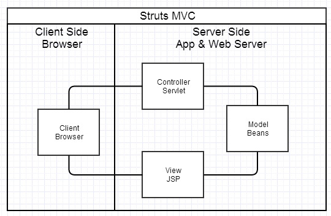
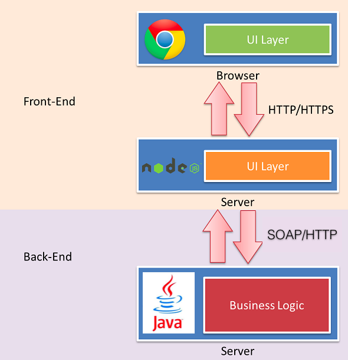

About me
- github: @fantasyni
- yixin, wechat: fantasyni
- core member from pomelo at Netease
- node.js hacker, over 3 years node experiences
- not just a code farmer, but a code poet

@fantasyni from Pomelo Netease

http 无状态
server 端通过与 browser 约定好 cookie 来记录一些信息（比如登录）
browser 在http request请求header中通过 Cookie 字段上传 cookie
server 在http response中通过 Set-Cookie 设置 cookie
cookie 对应 domain, path, expires, max-age, httpOnly, secure
cookie 加密
配置 cookie_key, cookie_secret
var cookieSecret = this.$configService.getCookieSecret();
app.configure(function() {
app.use(express.cookieParser(cookieSecret));
});
CookieService.prototype.setCookie = function(res, val, opt) {
var cookieKey = this.$configService.getCookieKey();
var domain = this.$configService.getCurHost();
var options = {
domain: domain,
path: '/',
signed: true
};
opt = opt || options;
if (typeof val === 'object') {
val = JSON.stringify(val);
}
res.cookie(cookieKey, val, opt);
}
var signedCookies = req.signedCookies;
var user = this.$cookieService.getCookieUser(signedCookies);
if (user) {
req.session.user = user;
res.locals.user = user;
return next();
} else {
// 跳转到 login 页面
res.redirect('/login');
}CookieService.prototype.getCookieUser = function(cookies) {
var cookieKey = this.$configService.getCookieKey();
if (cookies && typeof cookies === 'object') {
var user = cookies[cookieKey];
if (user) {
user = JSON.parse(user);
}
return user;
} else {
return null;
}
}
CookieService.prototype.clearCookie = function(req, res) {
var cookieKey = this.$configService.getCookieKey();
var domain = this.$configService.getCurHost();
req.session.destroy(function() {});
res.clearCookie(cookieKey, {
domain: domain,
path: '/',
});
}
session基于cookie
内存session
集中式session
session 存储在node内存中
node有状态
不能使用 cluster
session 存储在redis中
node无状态
可以使用 cluster
var RedisStore = require('connect-redis')(express);
app.use(express.session({
secret: cookieSecret,
key: sessionKey,
store: new RedisStore({
host: redisSessionHost,
port: redisSessionPort
})
}));
session store 默认是 MemoryStore
mvc -- model view controller
spring mvc
model
数据层 -- POJO -- 简单js对象，数据的实体
view
展示层 -- ejs dust 等模板
controller
控制层 -- 负责从依赖的service获取model并render到对应的view中
controller
controller -- service -- dao
为了更好的分层解偶进行团队协作
controller 依赖于service
service 是对业务操作的具体封装
service 依赖于dao，也可以依赖其它service
dao -- 对数据库操作的封装
Fast, unopinionated, minimalist web framework for Node.js
web 开发框架
var express = require('express');
var app = express();
app.get('/', function(req, res){
res.send('hello world');
});
app.listen(3000);application
app.configure
// all environments
app.configure(function(){
app.set('title', 'My Application');
})
// development only
app.configure('development', function(){
app.set('db uri', 'localhost/dev');
})
// production only
app.configure('production', function(){
app.set('db uri', 'n.n.n.n/prod');
})
application
app.use
middleware 中间件
var express = require('express');
var app = express();
// simple logger
app.use(function(req, res, next){
console.log('%s %s', req.method, req.url);
next();
});
// respond
app.use(function(req, res, next){
res.send('Hello World');
});
app.listen(3000);
application
app route
请求路由控制
app.get('/', function(req, res){
res.send('hello world');
});
app.get
app.post
app.delete
app.head
request
app.get('/', function(req, res){
res.send('hello world');
});
request 就是 route 控制回调里面的 req
req.params
路由参数
app.get('/user/:name', function(req, res){
res.send('hello world');
});
// GET /user/tj
req.params.name
// => "tj"
req.query
查询参数
// GET /search?q=tobi+ferret
req.query.q
// => "tobi ferret"
req.body
请求体参数
var app = require('express')();
var bodyParser = require('body-parser');
var multer = require('multer');
app.use(bodyParser.json()); // for parsing application/json
app.use(bodyParser.urlencoded({ extended: true })); // for parsing application/x-www-form-urlencoded
app.use(multer); // for parsing multipart/form-data
app.post('/', function (req, res) {
console.log(req.body);
res.json(req.body);
})
req.cookies, req.signedCookies
请求cookie
// Cookie: name=tj
req.cookies.name
// => "tj"
// Cookie: user=tobi.CP7AWaXDfAKIRfH49dQzKJx7sKzzSoPq7/AcBBRVwlI3
req.signedCookies.user
// => "tobi"req.path
请求path
// example.com/users?sort=desc
req.path
// => "/users"
response
app.get('/', function(req, res){
res.send('hello world');
});
response 就是 route 控制回调里面的 res
res.cookie
设置浏览器cookie
res.cookie('name', 'tobi', { domain: '.example.com', path: '/admin', secure: true });
res.cookie('rememberme', '1', { expires: new Date(Date.now() + 900000), httpOnly: true });
res.cookie('name', 'tobi', { signed: true });
res.clearCookie
清理浏览器cookie
res.cookie('name', 'tobi', { path: '/admin' });
res.clearCookie('name', { path: '/admin' });
res.redirect
重定向到url
res.redirect('/foo/bar');
res.redirect('http://example.com');
res.redirect(301, 'http://example.com');
res.redirect('../login');
res.send
send 一个 response
res.send(new Buffer('whoop'));
res.send({ some: 'json' });
res.send('some html
');
res.status(404).send('Sorry, we cannot find that!');
res.status(500).send({ error: 'something blew up' });
res.json
send 一个 json response
res.json(null)
res.json({ user: 'tobi' })
res.status(500).json({ error: 'message' })
res.render
返回一个模板render后的html
res.render('user', { name: 'Tobi' }, function(err, html){
// ...
});
middleware
一个express执行其实是一系列middleware的调用
请求链
var express = require('express');
var app = express();
var cookieParser = require('cookie-parser');
// load the cookie parsing middleware
app.use(cookieParser());Bearcat is a POJOs based application framework which provides a lightweight container for writing simple, mintainable node.js, it is designed to solve all of these painful things.
Simple POJOs + Configuration metadatas = Elastic, maintainable system
var POJO = function() {
this.props = null;
}
POJO.prototype.method = function() {
}
module.exports = POJO;var Engine = require('./engine');
var Wheel = require('./wheel');
var Car = function() {
this.engine = new Engine();
this.wheel = new Wheel();
}
Car.prototype.run = function() {
this.engine.run();
var res = this.wheel.run();
console.log('run car...');
return 'car ' + res;
}
module.exports = Car;var Car = function($engine) {
this.$id = "car";
this.$engine = $engine;
this.$wheel = null;
}
Car.prototype.run = function() {
this.$engine.run();
var res = this.$wheel.run();
console.log('run car...');
return 'car ' + res;
}
module.exports = Car;just add a simple configuration metadata file context.json
{
"name": "simple_inject",
"scan": ""
}var Bearcat = require('bearcat');
var contextPath = require.resolve('./context.json');
var bearcat = Bearcat.createApp([contextPath]);
bearcat.start(function(){
var car = bearcat.getBean('car'); // get bean
car.run(); // call the method
});[2014-05-04 18:50:41.996] [INFO] bearcat - [app] Bearcat startup in 6 ms
run engine...
run wheel...
run car...
By default, scope is singleton
var Car = function($engine) {
this.$id = "car";
this.$scope = "singleton";
this.$engine = $engine;
this.$wheel = null;
}
Car.prototype.run = function() {
this.$engine.run();
var res = this.$wheel.run();
console.log('run car...');
return 'car ' + res;
}
module.exports = Car;var car1 = bearcat.getBean('car');
var car2 = bearcat.getBean('car');
// car2 is exactly the same instance as car1you can set scope to prototype
var Car = function($engine) {
this.$id = "car";
this.$scope = "prototype";
this.$engine = $engine;
this.$wheel = null;
}
Car.prototype.run = function() {
this.$engine.run();
var res = this.$wheel.run();
console.log('run car...');
return 'car ' + res;
}
module.exports = Car;var car1 = bearcat.getBean('car');
var car2 = bearcat.getBean('car');
// car2 is not the same instance as car1Initialization method
var Car = function() {
this.$id = "car";
this.$init = "init";
this.num = 0;
this.$engine = null;
}
Car.prototype.init = function() {
console.log('init car...');
this.num = 1;
return 'init car';
}
Car.prototype.run = function() {
this.$engine.run();
console.log('run car...');
return 'car ' + this.num;
}
module.exports = Car;Destruction method
var Car = function() {
this.$id = "car";
this.$destroy = "destroy";
}
Car.prototype.destroy = function() {
console.log('destroy car...');
return 'destroy car';
}
Car.prototype.run = function() {
console.log('run car...');
return 'car';
}
module.exports = Car;Async Initialization method
var Car = function() {
this.$id = "car";
this.$init = "init";
this.$order = 2;
this.num = 0;
}
Car.prototype.init = function() {
console.log('init car...');
this.num = 1;
return 'init car';
}
Car.prototype.run = function() {
console.log('run car...');
return 'car ' + this.num;
}
module.exports = Car;Async Initialization method
var Engine = function() {
this.$id = "engine";
this.$init = "init";
this.$async = true;
this.$order = 1;
}
Engine.prototype.init = function(cb) {
console.log('init engine...');
setTimeout(function() {
console.log('asyncInit setTimeout');
cb();
}, 1000);
}
Engine.prototype.run = function() {
console.log('run engine...');
return 'wheel';
}
module.exports = Engine;Configurations are actually properties in POJO, therefore, you can use DI to solve it
var Car = function() {
this.$id = "car";
this.$Vnum = "${car.num}";
}
Car.prototype.run = function() {
console.log('run car' + this.$Vnum);
return 'car' + this.$Vnum;
}
module.exports = Car;placeHolder to be replaced by the specific envrioment value
${car.num}then in config.json file you can define car.num with the specific value
{
"car.num": 100
}Different environment configurations:
├─┬ placeholderSample/
│ ├─┬ config/
│ │ └─┬ dev/
│ │ │ └── car.json
│ │ └─┬ prod/
│ │ └── car.json
│ └── car.js
└── context.jsonSetup env at the startup command, by default the env is dev
Run with env or --env args
node app.js env=prodRun with NODE_ENV
NODE_ENV=prod node app.js一个node.js ORM dao框架
为了更方便的进行数据库操作
封装了底层细节, 使得开发者无需担心处理连接的申请和释放等问题
Domain 定义
Domain 是一个 POJO, 描述了表和对象之间的关系
var simpleDomain = function() {
this.id = 0;
this.name = null;
}
module.exports = {
func: Domain,
primary: [{
name: "id",
type: "Long"
}],
fields: ["name"],
tableName: "BEARCAT_TEST"
} /* nscheduler IDGenerator table */
DROP TABLE IF EXISTS BEARCAT_TEST;
create table BEARCAT_TEST(
id bigint(20) NOT NULL DEFAULT 0,
name varchar(50) NOT NULL,
PRIMARY KEY (id)
)ENGINE=InnoDB DEFAULT CHARSET=utf8;编写 dao
Bearcat-dao 提供了封装基本sql和cache操作的 domainDaoSupport
通过依赖注入可以很方便的使用, init domainDaoSupport的时候调用 initConfig 方法来进行 domain O/R mapping 的初始化配置
之后你可以使用domainDaoSupport来很方便的封装你自己的daos
var SimpleDomain = require('simpleDomain');
var SimpleDao = function() {
this.$id = "simpleDao";
this.$init = "init";
this.$domainDaoSupport = null;
this.tableName = null;
}
SimpleDao.prototype.init = function() {
// init with SimpleDomain to set up O/R mapping
this.$domainDaoSupport.initConfig(SimpleDomain);
this.tableName = this.$domainDaoSupport.getTableConfig().getTableName();
}
// query list all
// callback return mapped SimpleDomain array results
SimpleDao.prototype.getList = function(cb) {
var sql = ' 1 = 1';
return this.$domainDaoSupport.getListByWhere(sql, null, null, cb);
}
module.exports = SimpleDao;详细的 api 文档在domainDaoSupport
bearcat 中使用 bearcat-dao
在context.json中加入
"dependencies": {
"bearcat-dao": "*"
},
"beans": [{
"id": "mysqlConnectionManager",
"func": "node_modules.bearcat-dao.lib.connection.sql.mysqlConnectionManager",
"props": [{
"name": "port",
"value": "${mysql.port}"
}, {
"name": "host",
"value": "${mysql.host}"
}, {
"name": "user",
"value": "${mysql.user}"
}, {
"name": "password",
"value": "${mysql.password}"
}, {
"name": "database",
"value": "${mysql.database}"
}]
}, {
"id": "redisConnectionManager",
"func": "node_modules.bearcat-dao.lib.connection.cache.redisConnectionManager",
"props": [{
"name": "port",
"value": "${redis.port}"
}, {
"name": "host",
"value": "${redis.host}"
}]
}]日志通过 pomelo-logger模块来处理
pomelo-logger 是对 log4js 的简单封装，并提供了一些非常有用的 feature
var logger = require('pomelo-logger').getLogger('bearcat-test', 'AgentService');
getLogger 第一个参数是 category，日志都是与 category 进行对应输出到指定的文件中
getLogger 第二个之后的参数在打印日志的时候，会添加到日志开头，一般建议为当前POJO名，以便根据日志进行定位
日志的配置 log4js.json
bearcat 开发下该文件放在 config/env 下面
{
"appenders": [{
"type": "console"
}, {
"type": "file",
"filename": "logs/bearcat.log",
"maxLogSize": 104857600,
"layout": {
"type": "basic"
},
"backups": 5,
"category": "bearcat"
}, {
"type": "file",
"filename": "logs/bearcat-dao.log",
"maxLogSize": 104857600,
"layout": {
"type": "basic"
},
"backups": 5,
"category": "bearcat-dao"
}, {
"type": "file",
"filename": "logs/nscheduler.log",
"maxLogSize": 104857600,
"layout": {
"type": "basic"
},
"backups": 5,
"category": "nscheduler"
}],
"levels": {
"bearcat": "DEBUG",
"bearcat-dao": "DEBUG",
"nscheduler": "DEBUG",
"pomelo": "ERROR",
"pomelo-rpc": "ERROR",
"pomelo-admin": "ERROR"
},
"replaceConsole": false,
"lineDebug": true
}具体配置可以参照pomelo-logger配置
node.js 单线程
一个node进程（一般）只能使用到一个cpu
var cluster = require('cluster');
var http = require('http');
var numCPUs = require('os').cpus().length;
if (cluster.isMaster) {
// Fork workers.
for (var i = 0; i < numCPUs; i++) {
cluster.fork();
}
cluster.on('exit', function(worker, code, signal) {
console.log('worker ' + worker.process.pid + ' died');
});
} else {
// Workers can share any TCP connection
// In this case its a HTTP server
http.createServer(function(req, res) {
res.writeHead(200);
res.end("hello world\n");
}).listen(8000);
}http request module
var request = require('request');
request('http://www.google.com', function (error, response, body) {
if (!error && response.statusCode == 200) {
console.log(body) // Print the google web page.
}
})streaming
request('http://google.com/doodle.png').pipe(fs.createWriteStream('doodle.png'))fs.createReadStream('file.json').pipe(request.put('http://mysite.com/obj.json'))form 提交
application/x-www-form-urlencoded
request.post('http://service.com/upload', {form:{key:'value'}})
multipart/form-data
var r = request.post('http://service.com/upload', function optionalCallback(err, httpResponse, body) {});
var form = r.form();
form.append('my_field', 'my_value');
form.append('my_buffer', new Buffer([1, 2, 3]));
form.append('custom_file', fs.createReadStream(__dirname + '/unicycle.jpg'), {filename: 'unicycle.jpg'});
request(options, callback)
https://github.com/request/request#requestoptions-callbackheaders
timeout
pool
proxy
localAddress
...
一个守护进程可以保证进程forever运行
https://github.com/nodejitsu/forevernpm install forever -gforever start app.jsforever listforever restartallthe whole repository is bearcat-todo, forked from fengmk2-todo

Project code structure -- MVC driven
├─┬ app/
│ ├─┬ controller/
│ │ └── todoController.js
│ ├─┬ dao/
│ │ └── todoDao.js
│ ├─┬ domain/
│ │ └── todoDomain.js
│ ├─┬ service/
│ │ └── todoService.js
├─┬ config/
│ ├─┬ dev/
│ │ └── mysql.json
│ ├─┬ prod/
│ │ └── mysql.json
├── views/
├── public/
├── server.js
├── package.json
├── context.json
└── RERAME.mdtodoController.js -- simple POJO
var TodoController = function() {
this.$id = "todoController";
this.$todoService = null;
}
TodoController.prototype.index = function(req, res, next) {
res.render('index.html', {});
}
module.exports = TodoController;
Setup Bearcat and add route
var contextPath = require.resolve('./context.json');
var bearcat = Bearcat.createApp([contextPath]);
bearcat.start(function() {
/**
* Routing
*/
var router = urlrouter(function(app) {
app.get('/', bearcat.getRoute("todoController", "index"));
});
app.use(router);
// start app
app.listen(config.port);
console.log('Server start on ' + config.port);
});Setup Bearcat and add route
context.json setup scan path to enable auto-scan POJOs
{
"name": "bearcat-todo",
"scan": "app"
}Add todoService and todoDao
todoService.js
var TodoService = function() {
this.$id = "todoService";
this.$todoDao = null;
}
TodoService.prototype.getList = function(params, cb) {
return this.$todoDao.getList(params, cb);
}
module.exports = TodoService;
Add todoService and todoDao
todoDao.js
var TodoDomain = require('../domain/todoDomain');
var TodoDao = function() {
this.$id = "todoDao";
this.$init = "init";
this.$domainDaoSupport = null;
}
TodoDao.prototype.init = function() {
this.$domainDaoSupport.initConfig(TodoDomain);
}
TodoDao.prototype.getList = function(params, cb) {
var sql = ' 1=1 order by finished asc, id asc limit ?,?';
return this.$domainDaoSupport.getListByWhere(sql, params, null, cb);
}
module.exports = TodoDao;
Update todoController
todoController.js
TodoController.prototype.index = function(req, res, next) {
this.$todoService.getList([0, 50], function(err, results) {
if (err) {
console.log(err);
return;
}
res.render('index.html', {
todos: results
});
});
}
Just run it
node server.jsmagic is also in context.json
{
"name": "bearcat-todo",
"dependencies": {
"bearcat-dao": "*"
},
"scan": "app",
"beans": [{
"id": "mysqlConnectionManager",
"func": "node_modules.bearcat-dao.lib.connection.sql.mysqlConnectionManager",
"props": [{
"name": "port",
"value": "${mysql.port}"
}, {
"name": "host",
"value": "${mysql.host}"
}, {
"name": "user",
"value": "${mysql.user}"
}, {
"name": "password",
"value": "${mysql.password}"
}, {
"name": "database",
"value": "${mysql.database}"
}]
}]
}Set up mysql configuration
mysql.json in dev
{
"mysql.port": 3306,
"mysql.host": "localhost",
"mysql.user": "root",
"mysql.password": "test",
"mysql.database": "bearcat_test"
}Swith to production env ?
mysql.json in prod
{
"mysql.port": 3306,
"mysql.host": "10.123.22.3",
"mysql.user": "todo_online",
"mysql.password": "todo_online_aqz",
"mysql.database": "bearcat_todo_online"
}Just run it
node server.jsnode server.js env=prodnode.js 中绝大多数 api 都是异步的，流程控制要在异步回调中处理
https://github.com/caolan/async异步方法，在回调第一个参数err处理，底层方法直接cb(err)往上抛即可，上层调用方再去判断异常是否存在并打日志 err.stack
不要试图用 try catch 去捕获一个异步方法的异常
全局异常捕获要加上以免进程退出
// Uncaught exception handler
process.on('uncaughtException', function(e) {
logger.error('Caught exception: ' + e.stack);
});为什么前端需要了解node.js开发？
为什么前端需要了解node.js开发？
前后端开发分离，前后端各自专注于各自擅长的事儿，提高开发效率和维护成本
http://www.nczonline.net/blog/2013/10/07/node-js-and-the-new-web-front-end/ 问题
后端服务不稳定, 前端效率就大大降低
前端也不方便mock数据，也就不好做单元测试
即使是基于rest开发，前端也需要依赖后端
全rest开发的app也有缺点，代码无法复用（比如校验），不利于seo，性能不能通过 bigpiper 等技术进行优化，除非和后端进行沟通
route 本来是前端关注的，却是后端在controller里面写的
这又需要前后端进行沟通
序列化协议，mq，pub/sub
配置简单，可以多种选择
比如登录状态，是在node.js中间层保持还是后端服务保持，需要由具体业务决定
/
#